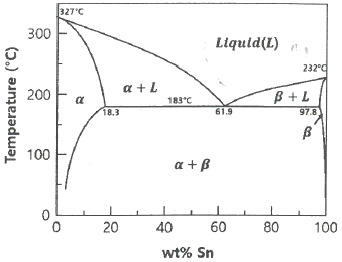
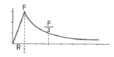
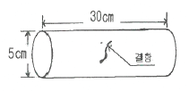
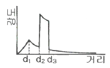
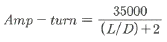
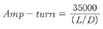
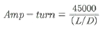

자기비파괴검사기사 (2020-08-22 기출문제)
1과목: 비파괴검사 개론
1. 와전류탐상시험의 장점에 대한 설명으로 옳은 것은?
- 비금속에 적용이 용이하다.
- 시험속도가 빠르며 자동화가 가능하다.
- 결함의 종류 판별 및 내부결함검사가 용이하다.
- 복잡한 형상을 갖는 시험체의 전면 탐상에 유리하다.
(정답률: 91%)

2. 다음 중 생성중인 결함(성장하고 있는 결함)을 검출하기에 적당한 비파괴시험은?
- 음향방출시험
- 방사선투과시험
- 자분탐상시험
- 기포누설시험
(정답률: 75%)
3. 강에서 음속 5900m/s, 밀도 7.8g/cm3일 때 임피던스는?
- 4.6×105g/cm2ㆍs
- 7.5×105g/cm2ㆍs
- 4.6×106g/cm2ㆍs
- 7.5×106g/cm2ㆍs
(정답률: 53%)
4. 엑스선발발생장치와 감마선조사장치의 공통점이 아닌 것은?
- 자외선보다 파장이 짧은 광자를 방출한다.
- 전원이 필요하다.
- 원자번호가 높은 물질로 차폐한다.
- 발생된 방사선강도는 거리제곱에 반비례한다.
(정답률: 79%)
5. 다음 중 보수검사 시 자분탐상시험의 대상이 되는 결함이 아닌 것은?
- 응력부식 균열
- 언더컷 거부에 발생한 균열
- 필렛 용접부의 피로 균열
- 크리프(Creep) 균열
(정답률: 60%)
6. 켈멧(kelmet)에 대한 설명으로 옳은 것은?
- Cu-Si계 합금으로 장식용으로 사용한다.
- Cu-Al계 합금으로 내마모성이 우수하다.
- Cu-Zn계 합금으로 볼트, 너트의 재료이다.
- Cu-Pb계 합금으로 베어링용으로 사용한다.
(정답률: 65%)
7. 다음 Pb-Sn 합금 상태도에 대한 설명으로 틀린 것은?

- 공정반응이 일어난다.
- a상과 (a+L)상 사이의 경계선을 고상선이라 한다.
- L상과 (a+L)상 사이의 경계선을 액상선이라 한다.
- 아공정합금을 실온까지 서냉하면 a상과 β상은 층상구조만으로 이루어진다.
(정답률: 67%)
8. Fe-Fe3C 상태도에 대한 설명으로 옳은 것은?
- A2는 시멘타이트의 자기변태점이며, 약 210℃이다.
- 공정점의 탄소량은 약 4.3%이다.
- 순철의 A3 변태점은 δ↔γ이며, 약 1490℃이다.
- A0는 철의 자기변태점이며, 약 768℃이다.
(정답률: 60%)
9. 다음 중 경질 및 고융점의 비금속 내화재와 융점이 낮은 금속을 소결시킨 복합재는?
- 서멧
- 인바
- 퍼멀로이
- 플래티나이트
(정답률: 50%)
10. 냉간 가공으로 인해 금속결정 내부에 전위와 같은 결함이 증가함으로서 변화하는 성질이 아닌 것은?
- 가공하면 전위의 집적에 의하여 경화한다.
- 냉간 가공으로 인해 금속 결정의 경도는 증가한다.
- 가공경화에 의해 변태강도는 감소하나, 연신은 증가한다.
- 가공으로 금속 내에 공격자점이 증가하면 전기저항이 증가한다.
(정답률: 81%)
11. 양백의 특징에 대한 설명으로 틀린 것은?
- 양은 또는 백동이라고도 불린다.
- 성분이 10~20%Ni, 15~30%Zn, Cu인 합금이다.
- Sn을 넣으면 강도를 저하시키고 Pb는 편석을 초래한다.
- 전기 저항이 크기 때문에 일반 전기 저항체로 사용 가능하다.
(정답률: 56%)
12. 다음 알루미늄 합금에서 개량처리의 효과가 기대되는 실루민의 계로 옳은 것은?
- Al-Co계
- Al-Si계
- Al-Sn계
- Al-Zn계
(정답률: 80%)
13. 재료에 일정한 하중을 가하고 고온에서 긴 시간 동안에 변형량을 측정하는 시험은?
- 피로 시험
- 전단 시험
- 인장 시험
- 크리프 시험
(정답률: 78%)
14. 파괴를 일으키는 응력보다 훨씬 낮은 응력에서 반복하여 하중을 가하면 결국 재료가 파괴되는 현상은?
- 피로 현상
- 에릭센 현상
- 항복 응력 현상
- 크리프 한도 현상
(정답률: 79%)
15. 다음 중 저온과 고압에 사용되는 금속재료가 구비해야 할 조건과 가장 거리가 먼 것은?
- 용접성이 좋을 것
- 항복점이 낮을 것
- 가공성이 좋을 것
- 내충격성이 좋을 것
(정답률: 80%)
16. 다음 중 압접에 해당하는 용접방식은?
- 초음파 용접
- 스터드 용접
- 전자빔 용접
- 피복 아크 용접
(정답률: 58%)
17. 아크용접 작업에서 아크 발생시간이 7분, 아크 중지(휴식)시간이 3분이라 할 때 용접기 사용률은 몇 %인가?
- 30
- 50
- 70
- 90
(정답률: 85%)
18. 다음 용접 변형 중 면내 변형이 아닌 것은?
- 각 변형
- 가로 수축
- 세로 수축
- 회전 병형
(정답률: 59%)
19. 연강용 피복 아크 용접봉의 종류에서 피복제의 계통이 고산화티탄계인 것은?
- E 4301
- E 4311
- E 4313
- E 4316
(정답률: 65%)
20. 용접 후 용접변형에 대한 교정방법이 아닌 것은?
- 전진법
- 롤러에 의한 법
- 가열 후 해머질하는 법
- 얇은 판에 대한 점 수축법
(정답률: 73%)
2과목: 자기탐상검사 원리
21. 그림에 나타낸 자장분포곡선은 다음 중 어느 경우인가?

- 속이 찬 자성 도체에 직류가 흐를 때
- 속이 찬 비자성 도체에 직류가 흐를 때
- 속이 빈 비자성 도체에 교류가 흐를 때
- 속이 빈 자성 도체에 직류가 흐를 때
(정답률: 63%)
22. 자화전류의 종류와 선정방법에 관한 설명으로 틀린 것은?
- 맥류는 표피효과가 전혀 생기지 않아 내부결함 검출 성능이 우수하다.
- 교류는 일반적으로 잔류법에는 사용되지 않는다.
- 충격전류는 일반적으로 연속법에는 사용되지 않는다.
- 교류에 의한 자화에서는 직류에 비해 표피효과가 크다.
(정답률: 47%)
23. 자계의 세기와 자속밀도와의 관계를 도표화한 곡선을 무엇이라 하는가?
- 자기이력 곡선
- 크리프 곡선
- 포화력 곡선
- 자기유도 곡선
(정답률: 77%)
24. 길이 5인치, 지름 2인치 인 봉재를, 코일로 5회 감아 자분탐상검사할 때 자화전류는 몇 A가 필요한가?
- 500~700
- 3600
- 7780
- 17500
(정답률: 69%)
25. 자기탐상시험에서 나타나는 의사지시 중 시험체를 탈자하고 다시 자화하여 검사액을 적용하면 나타나지 않는 지시는?
- 단면급변 지시
- 균열 지시
- 자기펜 지시
- 기공 지시
(정답률: 74%)
26. 다음 중 철강재료의 자기특성에 대해 설명한 것으로 옳은 것은?
- 탄소함유량이 많을수록 포화자속밀도가 크다.
- 담금질(Quenching)한 재료는 포화자속밀도가 크다.
- 담금질(Quenching)한 재료는 잔류자속밀도가 크다.
- 냉간 가공비가 클수록 보자력이 크다.
(정답률: 40%)
27. 자분탐상검사 시 비관련지시가 형성되는 가장 주된 원인은?
- 자화전류의 종류가 부적합했을 때
- 과잉의 자화전류를 적용했을 때
- 자화전류가 부족했을 때
- 적정한 자화전류를 적용했을 때
(정답률: 59%)
28. 외경이 5cm, 두께가 2mm되는 튜브를 축통전법 직류로 자화할 경우 튜브 안쪽 표면의 자장의 세기는?
- 0이다.
- 바깥 표면과 같다.
- 가장 높다.
- 침투깊이를 계산하여 밖의 표면 값과 비교하여 알 수 있다.
(정답률: 70%)
29. 자분탐상검사에서 건식자분 적용방법에 관한 사항으로 틀린 것은?
- 시험면이 건조된 상태이어야 한다.
- 산포기로 자분을 공기 중에 분산시켜 검사체에 살살 뿌린다.
- 침지법은 천천히 교반 유동시킨 건식자분에 침지해야한다.
- 과잉자분 제거는 건조한 공기로 가볍게 검사면에 뿌린다.
(정답률: 67%)
30. 건식 자분탐상시험법의 장점이 아닌 것은?
- 휴대용 장비 사용 시 검사비용이 비교적 저렴하다.
- 교류나 반파정류를 사용 시 유동성이 좋다.
- 휴대용 장비로 대형부품의 검사가 용이하다.
- 미세한 결함에 대하여 습식법과 마찬가지로 감도가 아주 좋다.
(정답률: 62%)
31. 강자성체에 자장을 서서히 증가시킬 때, 재질내에 존재하는 자구(Magnetic domain)의 방향에 의한 영향으로 자화가 연속적으로 되지 않고 계단식으로 되는 현상을 무엇이라 하는가?
- 표피효과(Skin effect)
- 홀효과(Hall effect)
- 박하우젠효과(Barkhausen effect)
- 모서리 효과(Edge effect)
(정답률: 79%)
32. 자분탐상시험에서 맥류를 설명한 것으로 내용이 틀린 것은?
- 직류에 교류 성분이 포함된 것이다.
- 연속법과 잔류법 모두에 사용이 가능하다.
- 표면결함과 표면 근방의 내부 결함을 검출할 수 있다.
- 교류 성분이 충분히 많은 맥류는 표피효과가 상쇄되어 내부 결함의 검출능력이 우수하다.
(정답률: 62%)
33. 다음 중 가장 낮은 유효자계에서 자분모양이 나타나는 표준시험편은?
- A1-7/50
- A1-15/50
- A2-7/50
- A2-15/50
(정답률: 57%)
34. 다음 중 단조품의 자분탐상시험 시 소성이 적은 변화에 의해 나타나는 판정 대상이 아닌 자분모양으로써 과도한 전류를 사용한 경우에 잘 나타나므로 자화전류를 낮추어 재시험하면 사라지는 자분모양은 무엇인가?
- 단류선(flow line)
- 편석지시(segregation indication)
- 국부냉간가공(local cold working)
- 개재물 지시(inclusion indication)
(정답률: 64%)
35. 자분탐상검사에서 탐상 유효범위에 관한 사항으로 틀린 것은?
- 극간법에서는 자극간 거리에 따라 설정된다.
- 프로드법에서 전극간 거리에 따라 설정된다.
- 코일법에서는 코일의 폭에 따라 설정된다.
- 축통전법에서는 시험체 직경에 따라 설정된다.
(정답률: 43%)
36. 코일법으로 형광습식자분을 이용하여 직경이 작은 환봉을 검사했을 때 원주 방향의 한 면에서 흡착량도 적고 뚜렷하지 않은 자분 지시가 나타났다. 블림(normalizing)하고 재시험을 하니 이 지시가 사라졌다. 이러한 지시는 무엇으로 판단되는가?
- 전류지시
- 재질경계지시
- 자극지시
- 냉간가공지시
(정답률: 45%)
37. 다음 중 보자성이 낮은 거친 시험체를 검사하기에 가장 적합한 자분탐상 시험방법은?
- 습식 잔류법
- 습식 연속법
- 건식 잔류법
- 건식 연속법
(정답률: 48%)
38. 자분탐상검사 시 투자율이 다른 재질경계에서 나타나는 지시에 대한 확인검사는 자분탐상검사만으로는 판별이 용이하지 않다. 이러한 의사지시모양의 판별 방법으로 적당치 않은 것은?
- 표면연마 후 부식시켜 거시적 조직검사
- 표면연마 후 부식시켜 미시적 조직검사
- 탈자 후 재검사하여 재현성 확인
- 침투탐상 등 다른 시험방법으로 확인검사
(정답률: 67%)
39. 두 종류의 금속을 접합하면 접합부는 각각 온도가 다르며, 그 접합한 면의 양쪽에 전위치가 발생하는 것을 무엇이라 하는가?
- Seebeck Effect
- Hall Effect
- Tomson Effect
- Fermi Effect
(정답률: 59%)
40. 보자성에 대한 설명이 올바른 것은?
- 어떤 재료의 자기이력곡선에서 자속밀도가 “0”을 나타내는 자계의 값
- 자화력을 제거한 후에는 재료 내에 어느 정도의 자화상태를 나타내는 물질의 성질
- 재료에 자계를 발생시키는 것으로 자기회로에서 자속을 발생시키는 원동력이 되는 힘
- 시험체가 외부 자계의 영향으로 원자들이 일정한 방향으로 배열하는 성질
(정답률: 70%)
3과목: 자기탐상검사 시험
41. 다음 중 자분탐상시험에서 금속 특성에 따른 예리한 무관련지시가 잘 나타나는 경우라고 볼 수 없는 것은?
- 용접부 근처의 열영향부
- 주강품의 표면부
- 높은 항자력을 지닌 공구강
- 높은 보자력을 지닌 공구강
(정답률: 55%)
42. 소형 기계 가공부품의 자분탐상시험에서 모서리 부분에 자분이 흡착되어 지사가 나타났다면 이 지시는 다음 중 어떤 자분 모양에 해당하는가?
- 표면 거칠기 지시
- 연삭 균열 지시
- 단면 급변 지시
- 개재물 지시
(정답률: 54%)
43. 다음 중 잔류법으로 자분탐상검사 시 검출감도가 가장 떨어지는 것은?
- 교류식
- 축전식
- 방전관식
- 정류식
(정답률: 73%)
44. 표면하 결함에 대한 검출 감도가 높은 것에서 낮은 것으로의 배열로 옳은 것은?
- HWDC(건식)-DC(습식)-DC(건식)-AC(습식)-AC(건식)
- HWDC(건식)-DC(건식)-DC(습식)-AC(건식)-AC(습식)
- DC(건식)-DC(습식)-HWDC(건식)-AC(건식)-AC(습식)
- DC(습식)-DC(건식)-HWDC(건식)-AC(습식)-AC(건식)
(정답률: 62%)
45. 자분 적용 시 건식법과 비교하였을 때 습식법의 장점이 아닌 것은?
- 크기가 크거나, 작은 불규칙한 모양의 검사품에 자분적용 용이
- 소형의 다량제품에 빠르고 좋은 방법
- 후처리 시 표면에 남은 자분제거가 용이
- 자동장치의 작업에 적합
(정답률: 63%)
46. 자분탐상검사방법 중 연속법에 관한 설명으로 틀린 것은?
- 습식법에 적용이 가능하다.
- 건식법에 적용이 가능하다.
- 자화전류는 검사액의 흐름이 정지되기 전에 끊어야 한다.
- 통전은 지시모양 형성에 충분한 시간으로 한다.
(정답률: 65%)
47. 축통전법으로 검사체를 자화할 때 자화전류와 표면자계와의 관계를 설명한 것으로 옳은 것은?
- 반경 4cm, 길이 12cm의 환봉에 직류 1200[A]를 흘릴 때 환봉 표면에서의 자계의 강도는 60[Oe]이다.
- 축통전법으로 2500[A]의 전류를 흘릴 때 환봉 표면의 자계의 강도가 50[Oe]가 되는 것은 환봉의 직경이 2cm일 때이다.
- 환봉 표면의 자계의 강도가 50[Oe]가 되기위해, 직경 5cm의 시험체에는 1250[A]의 전류를 흘려야 한다.
- 직경 5cm의 환봉강을 축통전법에 의해 AC 500[A]의 전류로 자화하면 표면자계의 강도는 20[Oe]가 된다.
(정답률: 36%)
48. 코일법에 의한 자분탐상검사법을 설명한 것으로 틀린 것은?
- 코일의 축에 직각인 원주 방향의 결함이 잘 검출된다.
- 자계강도는 코일에 흐르는 전류와 코일 감은 수의 곱에 비례한다.
- 코일에 전류를 통할 때 발생하는 코일의 축방향의 자계를 이용한다.
- 코일 내벽의 자계강도가 가장 약하고 코일 중심에 가까울수록 강해진다.
(정답률: 45%)
49. 작은 드릴구멍이나 나사형태의 시험체를 자분 탐상검사하기 위한 가장 적합한 방법은?
- 형광자분, 건식법
- 형광자분, 습식법
- 비형광자분, 건식법
- 비형광자분, 습식법
(정답률: 65%)
50. 자분탐상검사에서 습식용 자분액을 사용 전에 항상 혼합 시키는 가장 큰 이유는?
- 자화 전류가 커지기 때문이다.
- 산포되는 것을 방지하기 위함이다.
- 자분액의 침전을 막고 균일한 혼합을 위해서다.
- 자분액의 열화를 방지하고 변질된 자분의 성능을 회복시키기 위해서다.
(정답률: 71%)
51. 의사지시를 판별하는 방법으로 거리가 먼 것은?
- 자기펜 흔적 : 탈자후 재시험한다.
- 단면급변부 : 자화정도를 강하게 한다.
- 재질경계 지시 : 다른 검사방법과 병행 확인
- 자극, 전극 지시 : 극의 위치를 바꾸어 재시험 한다.
(정답률: 50%)
52. 유도전류법(Induced current method)에 대한 설명으로 틀린 것은?
- 자동장비에 사용이 가능하다.
- 시험체에 직접적인 전류의 접촉이 불필요하다.
- L/D 비율이 작아 코일법 적용이 불가능한 시험체에 가능하다.
- 크기가 작은 구형 시험체는 연속법으로 검사가 가능하다.
(정답률: 32%)
53. 그림과 같이 원통의 표면에 결함이 형성될 때 자분탐상검사 중 어떤 탐상법으로 하는 것이 가장 잘 검출될 수 있는가?

- 코일법
- 축통전법
- 전류관통법
- 자속관통법
(정답률: 50%)
54. 형광자분을 사용한 자분탐상검사에서 관찰 시 주의해야 할 사항으로 틀린 것은?
- 자외선 조사장치는 충분히 예열한 후 사용한다.
- 관찰 시 자외선을 시험면에 조사하여야 한다.
- 관찰할 때는 가능한 자외선을 시험면에 직각으로 조사한다.
- 시험면에서의 자외선 강도가 약할 경우에도 자외선등을 시험면에 가깝게 해서는 안된다.
(정답률: 47%)
55. 단면 급변 지시가 나타났을 때의 처리 방법은?
- 그대로 내버려둔다.
- 시험체를 약간 가열하여 준다.
- 시험체에 더욱 강한 자장을 걸어 준다.
- 자계의 세기를 약하게 한다.
(정답률: 64%)
56. 자분의 종류와 그 적용법에 대한 설명으로 틀린 것은?
- 습식법 – 미세한 결함의 검출에 적합하다.
- 형광자분 – 일밙거으로 습식으로 사용한다.
- 비형광자분 – 습식, 건식 모두 사용할 수 있다.
- 건식법 – 표면하 부근의 결함 검출에 불리하다.
(정답률: 50%)
57. 자분탐상 후 탈자할 때 시험체에 걸어주는 반전 자계의 방향에 대한 방법으로 효과적인 것은?
- 코일법으로 자화했다면 축통전법으로 탈자를 한다.
- 축통전법으로 자화했다면 코일법으로 탈자를 한다.
- 자화할 때 걸어준 자계 방향과 같은 방향으로 탈자를 한다.
- 자화할 때 걸어준 자계 방향과 무관하게 지그재그 방향으로 탈자를 한다.
(정답률: 62%)
58. 총길이가 80cm인 환봉에서 40cm는 직경이 10cm이고, 나머지 40cm는 직경이 30cm인 경우, 축통전법으로 통전할 때 가장 효과적인 방법은?
- 직경 30cm에 적합한 전류값으로 1차 통전시험하고, 직경 10cm에 적합한 전류값으로 2차 통전검사한다.
- 직경 10cm에 적합한 전류값으로 1차 통전시험하고, 직경 30cm에 적합한 전류값으로 2차 통전검사한다.
- 직경 10cm에 적합한 전류값으로 한 번에 통전검사한다.
- 직경 30cm에 적합한 전류값으로 한 번에 통전검사한다.
(정답률: 48%)
59. 그림은 어떤 부품의 자분탐상시험 시 자장의 분포를 나타낸 것이다. 어떤 부품의 형태로 판단되는가?

- 봉재
- 원통재
- 판재
- 두꺼운 판재
(정답률: 73%)
60. 다음 자화방법 중 원형 자화법에 속하지 않는 방법은?
- 전류관통법
- 축 통전법
- 프로드법
- 코일법
(정답률: 58%)
4과목: 자기탐상검사 규격
61. 보일러 및 압력용기에 대한 자분탐상검사(ASME Sec.V, Art.7)에서 다방향 자화법의 자계의 적정성을 확인하는데 적합한 것은?
- 홀소자
- 가우스미터
- 자계 탐촉자
- 인공결함시험편
(정답률: 53%)
62. 강자성재료의 자분탐상검사 방법 및 자분모양의 분류(KS D 0213)의 A형 표준시험편에서 A1이 A2보다 낮은 유효자계에서 자분모양이 나타나는 이유는?
- 가공하기 어렵기 때문
- 자기특성이 압연 방향과 그에 직각 방향에서 다르기 때문
- 어닐링처리를 하면 잔류응력이 제거되기 때문
- 어닐링처리를 하면 이방성이 매우 작아지기 때문
(정답률: 64%)
63. 강자성 재료의 자분탐상검사 방법 및 자분모양의 분류(KS D 0213)에서 규정한 잔류법에서의 통전시간으로 옳은 것은?
- 1/4초~1초
- 1/2초~3초
- 1초~5초
- 5초 초과
(정답률: 45%)
64. 강자성 재료의 자분탐상검사 방법 및 자분모양의 분류(KS D 0213)에 따라 코일법으로 자분탐상시험 시 시험편을 분할하여 검사할 때의 설명으로 틀린 것은?
- 시험체가 너무 길 때에는 분할하여 검사한다.
- 분할한 시험면의 경계부는 이웃끼리의 유효자계가 겹쳐지도록 한다.
- 전류치는 전체 전류치를 분할 회수로 나눈 값으로 한다.
- 시험체의 단면이 크게 급변하는 경우 분할하여 검사한다.
(정답률: 38%)
65. 보일러 및 압력용기에 대한 자분탐상검사(ASME Sec.V Art.7)에서 부품의 자화법에는 직접자화법과 간접자화법이 있다. 간접자화법에 해당하는 것은?
- 요크법
- 축통전법
- 클램프법
- 다축자화법
(정답률: 43%)
66. 강자성재료의 자분탐상검사 방법 및 자분모양의 분류(KS D 0213)에서 기술된 의사모양에 해당하지 않는 것은?
- 전류지시
- 전극지시
- 자극지시
- 자분지시
(정답률: 67%)
67. 강자성재료의 자분탐상검사 방법 및 자분모양의 분류(KS D 0213)에서 전류계, 타이머 및 자외선조사장치의 점검은 적어도 년 (ⓐ)회 하고, (ⓑ)이상 사용하지 않을 경우에는 사용시에 점검하여 성능을 확인하는 것을 사용해야 한다. 괄호 안에 알맞은 내용은 다음 중 어느 것인가?
- ⓐ 1, ⓑ 6개월
- ⓐ 1, ⓑ 1년
- ⓐ 2, ⓑ 6개월
- ⓐ 2, ⓑ 1년
(정답률: 53%)
68. 보일러 및 압력용기에 대한 자분탐상검사(ASME Sec. V Art. 7)에서 규정한 자화벙법이 아닌 것은?
- 원형 자화법
- 다방향 자화법
- 자속 관통법
- 선형 자화법
(정답률: 44%)
69. 강자성 재료의 자분탐상검사 방법 및 자분모양의 분류(KS D 0213)에 의한 용접부의 검사에서 용접 후 열처리 등의 지정이 있을 때 합부판정을 위한 자분탐상검사의 시기로 옳은 것은?
- 열처리 후에 시험한다.
- 용접완료 후 바로 시험한다.
- 열처리 전후 2회 시험한다.
- 용접완료 후 24시간 뒤에 시험한다.
(정답률: 47%)
70. 강자성 재료의 자분탐상 검사방법 및 자분모양의 분류(KS D 0213)에서 B형 대비 시험편의 외경이 200mm일 때 내경은 얼마인가?
- 30mm
- 50mm
- 70mm
- 90mm
(정답률: 65%)
71. 강자성 재료의 자분탐상검사 방법 및 자분모양의 분류(KS D 0213)에서 자화방법으로 틀린 것은?
- 자기장의 방향을 예측되는 흠집의 방향에 대해 직각으로 한다.
- 자기장의 방향을 검사면에 가능한 직각으로 한다.
- 가능한 반자기장을 적게 한다.
- 검사면을 태울 위험이 있을 경우는 검사 대상체에 직접 통전하지 않는 방법을 선택한다.
(정답률: 50%)
72. 보일러 및 압력용기에 대한 자분탐상검사(ASME Sec.V Art.7)에 따라 길이 대 지름 비가 2보다 작은 부품을 코일로 선형자화 시키고자 할 때 옳은 것은?

을 이용하여 자화전류를 구한다.
을 이용하여 자화전류를 구한다.
을 이용하여 자화전류를 구한다.- 코일법을 이용할 수 없다.
(정답률: 72%)
73. 자분탐상검사, 제2부 검출매체(KS B ISO 9934)에서 자분탐상 검사 제품의 특성을 점검하는 경우, 황 및 할로겐성분이 낮은 제품의 경우 황과 할로겐의 함유량은 얼마 미만이어야 하는가?
- 황 200 ppm, 할로겐 200 ppm
- 황 200 ppm, 할로겐 100 ppm
- 황 100 ppm, 할로겐 100 ppm
- 황 100 ppm, 할로겐 200 ppm
(정답률: 58%)
74. 강자성 재료의 자분탐상검사 방법 및 자분모양의 분류(KS D 0213)에 따라 여러 개의 검사 대상체를 동시에 검사할 때 고려해야 하는 사항으로 틀린 것은?
- 검사 대상체의 배치
- 표준시험편의 종류
- 자화 방법
- 자화 전류
(정답률: 56%)
75. 두께가 20mm인 강용접부를 강자성재료의 자분탐상검사 방법 및 자분모양의 분류(KS D 0213)에 따라서 연속법으로 일반적인 구조물을 자분탐상검사 할 때 적정한 자계의 강도는?
- 1200~2000[A/m]
- 2000~2400[A/m]
- 2400~3600[A/m]
- 3600~5600[A/m]
(정답률: 50%)
76. 강자성 재료의 자분탐상검사 방법 및 자분모양의 분류(KS D 0213)의 B형 대비시험편의 설명 중 맞는 것은?
- 용접부의 개선면 등의 좁은 부분에서 치수적으로 A형 표준 시험편의 적용이 곤란할 경우 A형 표준시험편 대신 사용한다.
- 시험품 표면의 유효자장의 강도 및 방향, 탐상 유효범위, 시험조작의 적부를 조사하는데 쓰인다.
- 장치, 자분 및 검사액의 성능을 조사하는데 사용한다.
- 피복된 도체를 관통하는 구멍의 중심을 통하게 하고, 잔류법으로 원통면에 자분을 적용하여 사용한다.
(정답률: 62%)
77. ASME Sec.VII Div.1 App.6에서 합격 기준치에 따라 평가할 경우 다음 중 불합격 결함은?
- 크기가 1/17인치인 선형 결함
- 크기가 2/16인치인 원형 결함
- 크기가 1/4인치인 원형 결함
- 서로 떨어진 거리가 1/2인치이고, 크기가 2/16인치인 3개의 원형결함 지시
(정답률: 56%)
78. 강자성재료의 자분탐상검사 방법 및 자분모양의 분류(KS D 0213)의 극간법에서 자극의 접촉부 및 그 주변부에 국부적으로 생기는 고밀도의 누설 자속에 의해 형성되는 자분 모양을 무엇이라 하는가?
- 전극지시
- 자극지시
- 전류지시
- 오류지시
(정답률: 69%)
79. 보일러 및 압력용기에 대한 자분탐상검사(ASME Sec.V Art.7)에 따르면 프로드법에서 요구되는 최소의 프로드 간격은?
- 8 inch
- 6 inch
- 3 inch
- 1 inch
(정답률: 40%)
80. 강자성재료의 자분탐상검사 방법 및 자분모양의 분류(KS D 0213)에서 검출된 지시모양이 의사모양인지를 확인하는 방법으로 탈자 후 재시험하면 자분모양이 사라지는 지시는?
- 자기 펜자국
- 전류지시
- 전극지시
- 자극지시
(정답률: 70%)